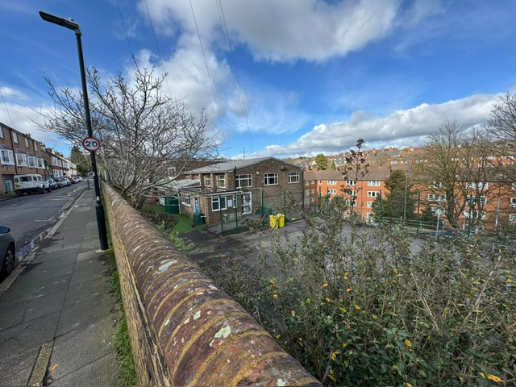
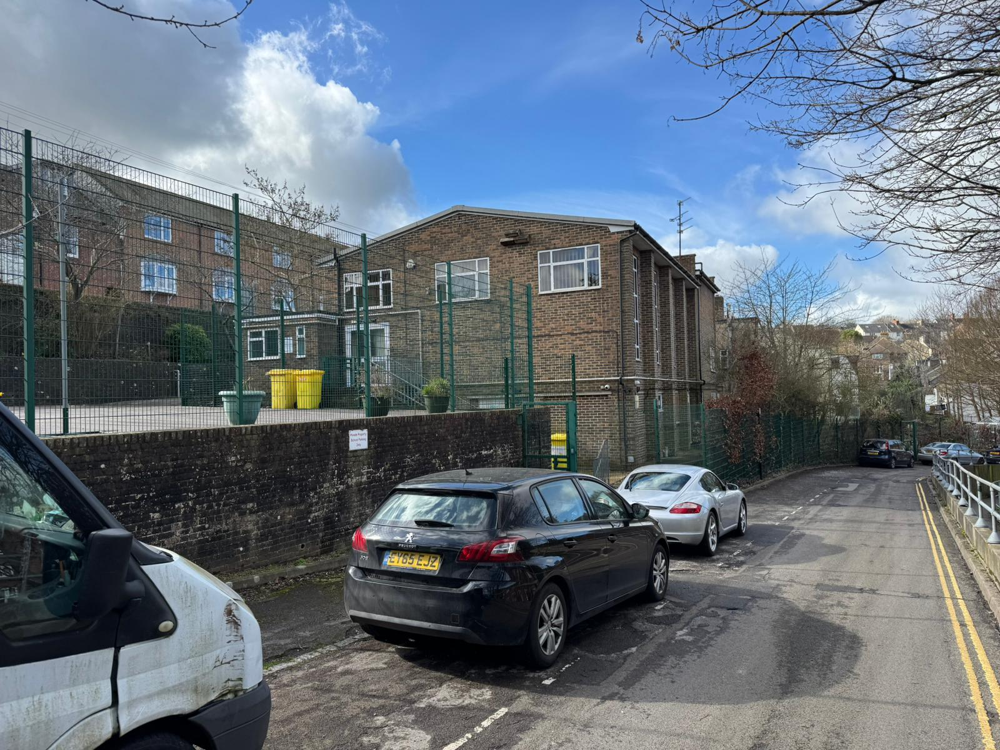
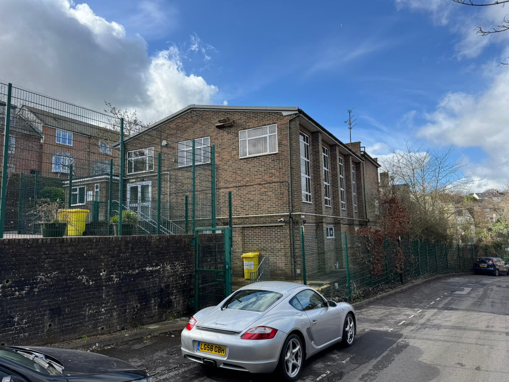
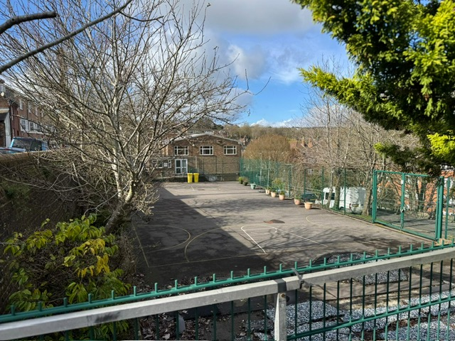
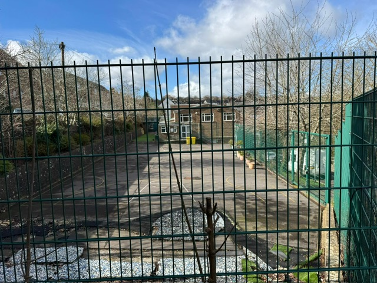
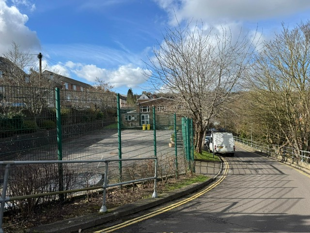
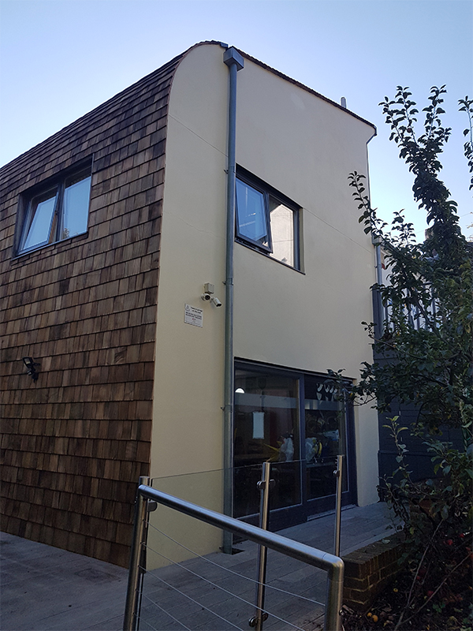
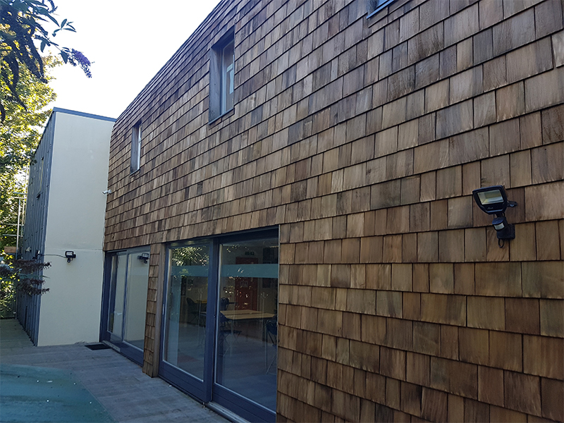
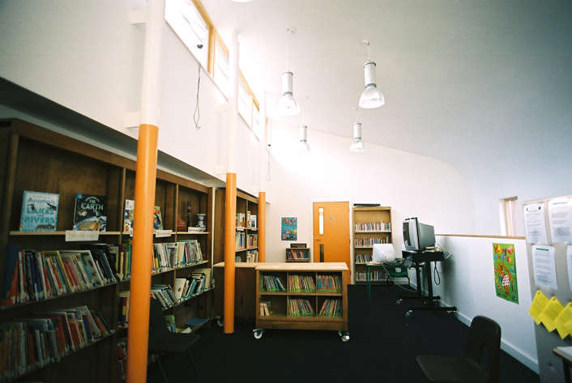

1
Former Education Asset
Existing school layout, safeguarding logic and child-focused infrastructure.

St Pancras Lewes

Nursery Opportunity
Former Primary School
Potential early years reuse
Subject to approvals and measured survey
De Montfort Road, Lewes BN7 1SR
A closed former Catholic primary school with existing education infrastructure, secure external play areas, a hall, library, nursery accommodation and a distinctive sustainable Art & Science block.
Closed
Former School
Good
Latest School Ofsted
107
Pupils at 2023 Inspection
TBC
Nursery Capacity
St Pancras Catholic Primary School is a closed former Roman Catholic primary school located on De Montfort Road in Lewes. The property presents a potential opportunity for early years reuse, benefiting from its former education use, established school layout, secure external areas and specialist learning accommodation.
The supplied upper ground and tower layout identifies a nursery room, cloakroom, toilets, hall, library, kitchen, reception, medical room, office / support space and multiple teaching rooms. The lower ground layout identifies support accommodation including storage, staff areas, plant rooms, kitchenette and ancillary spaces.
The site should be positioned as a differentiated nursery opportunity rather than a simple closed-school conversion: the key assets are the existing education infrastructure, secure play areas, strong Lewes location and sustainable Art & Science block.
| Property | St Pancras Catholic Primary School |
| Address | De Montfort Road, Lewes BN7 1SR |
| Former Use | Roman Catholic Primary School |
| Status | Closed former school |
| Latest School Ofsted | Good, March 2023 |
| Proposed Use | Potential day nursery / early years use |
| Capacity | To be confirmed by measured survey and EYFS review |
The property is a closed former Roman Catholic primary school. The latest school inspection remained Good and recorded 107 pupils on roll at the time of inspection. A former school capacity of 140 has been identified from DfE / GIAS search data, but should be verified against the formal DfE establishment data before external publication.
URN
114568
Local Authority
East Sussex
Diocese
Arundel & Brighton
Former Age Range
4–11
Pupils on Roll
107 at 2023 inspection
Former School Capacity
140, verification required

Important note
The supplied layout plans are marked “Not to Scale”. They are useful for understanding layout, room relationships and conversion potential, but must not be used to calculate floor areas or registered nursery capacity. Any child-place number must be calculated from measured usable childcare areas and confirmed through operator, planning, building-control and Ofsted registration review.
The site sits within the Lewes urban area, surrounded by established residential streets, nearby schools, local amenities and transport links. Earlier postcode research places Lewes railway station approximately 1 km from BN7 1SR.

Residential Catchment
Established family housing surrounds the site, supporting a local nursery proposition.
Transport Links
Lewes railway station is approximately 1 km from BN7 1SR based on postcode research.
Education Setting
The site sits among nearby education and family infrastructure within Lewes.
Town Context
The opportunity is embedded in the Lewes urban fabric rather than an isolated edge-of-town site.
The existing school frontage, secure gates, boundary wall and school keep-clear markings create a clear education identity. However, nursery conversion will need a detailed strategy for parent drop-off, collection, staff access, servicing, buggy access and disabled access.



Operational Strengths
Due Diligence Items
The supplied upper ground and tower plan shows a nursery room, cloakroom, toilets, hall, library, kitchen, reception, medical room, office / support space and multiple teaching rooms. The plan is not to scale and cannot be used to calculate capacity.

G14 Nursery
Existing nursery-labelled space shown on plan.
G2 Hall
Potential indoor gross motor, dining, activity or event space.
G1 Library
Potential reading, calm, SEN or sensory-support room.
Tower
Lobby, reception and medical room support controlled arrival.
G4 Kitchen
Potential catering / food-preparation support, subject to compliance.
G12 Cloakroom
Children's coats, bags and nursery circulation support.
G7 Office
Facilities / management / admin support space.
Teaching Rooms
Multiple rooms could support age-banded nursery accommodation.

The lower ground / crypt plan shows ARK LG14, kitchenette, under-stair cupboard, boiler room, water tank room, stores, staff room, toilets and caretaker store.
Several areas are marked as restricted height, including LG13, LG12, LG11, LG10 and related lower-ground areas. These spaces should not be assumed to count as usable childcare areas.
This accommodation should be positioned as operational support potential: storage, staff / back-of-house, plant, ancillary use and operator support, subject to measured survey, building-control advice and condition review.
The supplied imagery shows secure hardstanding, fenced play areas, external surfacing, gates and existing playground-style provision. This is one of the strongest nursery-conversion positives, subject to measured area, safeguarding, accessibility and risk-assessment review.




Hardstanding Play
Potential for bikes, scooters, movement and all-weather outdoor activity.
Early Years Play
Existing colourful play surfacing supports the early years story.
Age Zoning
Potential to separate baby, toddler and pre-school outdoor activity areas.
Secure Boundaries
Fencing and gates support safeguarding-led nursery design review.
A key feature of the site is its dedicated Art & Science block, a modern sustainable learning building that can help distinguish the opportunity from more conventional converted nursery buildings.
Publicly available architectural information previously identified this as a BakerBrown Art & Science extension opened in 2006, with sustainable design credentials including timber / shingle external character and environmental design principles.
Subject to survey and operator design, this space could support a creative studio, STEM-inspired pre-school room, sensory provision, discovery room, parent / community room, staff training space or premium activity studio.
Potential Use
Creative / STEM room
Operator Appeal
Premium differentiation
Alternative Use
Sensory / discovery room
Caveat
Condition survey required



This is not a proposed final layout. It is an initial operator-use concept based on the supplied layout plans and imagery. Final room use, age allocation and capacity must be confirmed by measured survey, operator design, EYFS review and statutory approvals.
| Existing Area / Feature | Potential Nursery Role |
|---|---|
| G14 Nursery | Early years / toddler or pre-school room, subject to measured area. |
| G12 Cloakroom | Children's coats, bags and nursery circulation support. |
| G2 Hall | Indoor gross motor play, dining, events, movement, wraparound or multi-use activity. |
| G1 Library | Reading room, calm room, SEND support, sensory provision or small-group learning. |
| G4 Kitchen | Food preparation / catering support, subject to hygiene, ventilation and compliance review. |
| Tower Reception / Medical Room | Parent arrival, visitor control, administration and first aid / care room. |
| G7 Facilities Office | Management, admin, staff or operator support space. |
| Multiple Teaching Rooms | Potential age-banded rooms for babies, toddlers and pre-school children. |
| Lower Ground Stores / Staff Areas | Storage, staff support, plant and back-of-house use, subject to restricted-height and condition review. |
| Art & Science Block | Premium creative, STEM, sensory, discovery, training or pre-school activity space. |
| External Hardstanding | Secure outdoor play, ride-on toys, active play and age-zoned outdoor provision. |
| Front Ground-Level Play Area | Early years outdoor provision and child-friendly arrival impression, subject to safeguarding and access review. |
EYFS capacity is based on usable indoor childcare space, age mix, staffing ratios, toilets, sleep/rest space, circulation, safeguarding, outdoor access and Ofsted registration. The former school capacity is not the same as nursery capacity.
Usable childcare floor area excludes areas such as storage, thoroughfares, staff areas, cloakrooms, utility rooms, kitchens and toilets. Outdoor space also cannot simply be added to indoor space to increase registered capacity.
The correct brochure position is therefore “capacity to be confirmed” until a measured survey and nursery operator layout have been completed.
| Age Group | Minimum Indoor Space |
|---|---|
| Children under 2 | 3.5 sq m per child |
| 2-year-olds | 2.5 sq m per child |
| 3–5-year-olds | 2.3 sq m per child |
Capacity Statement
No nursery capacity is stated in this draft. Capacity should be calculated only after measured usable childcare areas, room allocations, EYFS ratios and operator design are confirmed.
The former use is understood to be education use. A day nursery use would normally fall within Class E(f), but planning permission or formal confirmation may be required depending on the lawful existing use, material-change assessment, planning constraints and local authority position.
Use Class
Education to potential Class E(f) nursery use requires planning advice.
Planning Geography
The site appears to sit within South Downs National Park planning geography.
Highways
Parent drop-off, parking, staff access and servicing need review.
Statutory Checks
Fire, building control, accessibility, safeguarding and Ofsted registration required.
Recommended wording
Potential early years reuse is subject to planning/use-class confirmation with the relevant planning authority, including any requirement for change of use, building-control approvals, highways/drop-off assessment and any heritage, conservation, ecological, accessibility or neighbour-amenity constraints.
The market evidence should be presented carefully. East Sussex childcare sufficiency data indicates a broad childcare market with generally sufficient provision at district level, but also parent access issues, funded-hours expansion and housing growth that may increase pressure on places. Lewes should therefore be positioned as a quality-led market where differentiation matters.
704
East Sussex Providers
County childcare market scale from earlier sufficiency research.
98.5%
Good / Outstanding
High-quality local provision means the operator proposition must stand out.
29%
Access Issues
Parent survey access problems identified in earlier childcare research.
30 hrs
Funded Childcare
Expanded funded-hours entitlement may increase demand for formal childcare.
Demand conclusion
The opportunity should be positioned around differentiated, high-quality, full-day early years provision rather than a simple claim of local undersupply. The former school setting, outdoor space, hall, library and Art & Science block are the strongest ways to separate the site from existing local competition.
This is not an empty market. The most important nearby competitor is The Old School House Montessori Nursery on De Montfort Road itself. The brochure should acknowledge competition and then explain why St Pancras is physically distinctive.
| Provider | Position | Research Note |
|---|---|---|
| The Old School House Montessori Nursery | De Montfort Road | Outstanding; direct competitor on the same road; previously identified as 48 places. |
| Busy Bees Day Nursery at Lewes | St James Street | Good; full day care; previously identified as 51 places. |
| Stepping Stones | Morris Road | Good; previously identified as 38 places; later Ofsted concern action noted during research. |
| Pippa’s Group | Landport Community Hub | Good; previously identified as 30 places; term-time provision. |
| Southover Nursery School | Southover Church Hall | Good; sessional day care; previously identified as 30 places. |
| Cottage Pre-School | Christie Road | Good; previously identified as 24 places. |
| Kiddie Capers Childcare Ltd | Lewes | Registered in 2025; no inspection report was available at time of previous research. |
The investment story is not just “there is childcare demand”. It is that this asset has physical features that many nurseries struggle to create from scratch.
Existing school layout, safeguarding logic and child-focused infrastructure.
Existing fenced hardstanding, early years play areas and age-zoning potential.
A premium point of difference for STEM, art, sensory or discovery-led provision.
Established residential surroundings, town setting and transport access.
Hall, library, kitchen, reception, medical room and support accommodation.
More distinctive than a standard converted residential, church hall or office setting.
Serious nursery operators will expect these issues to be surfaced. Including them strengthens the brochure because it shows the opportunity has been reviewed honestly.
Measured Survey
Required before any nursery capacity can be stated.
Not-to-Scale Plans
Current plans are layout references only.
Planning / Use Class
Nursery conversion requires formal planning advice.
Ofsted Registration
Required before operation as an early years setting.
Fire Strategy
Important for multi-level buildings and sleeping children.
Accessibility
Level changes, ramps, steps and buggy access require review.
Highways / Drop-Off
Surrounding roads appear constrained and need assessment.
Parking
No confirmed dedicated parking count is currently available.
Outdoor Play Measurement
Usable external play areas need measured confirmation.
Building Condition
Roof, services, heating, drainage, asbestos and RAAC checks required.
Science Block Condition
Specialist block should be surveyed despite being a major feature.
Neighbour Amenity
Traffic, outdoor play noise and operating hours need planning review.
The gallery shows the frontage, street context, side and rear elevations, secure hardstanding, play areas, maps, plans and science block imagery available for this draft brochure.
Final Positioning
St Pancras combines existing education infrastructure, secure outdoor areas, hall, library, nursery accommodation, kitchen, support spaces and a distinctive Art & Science block. Subject to planning, Ofsted registration, measured survey and operator due diligence, the property has strong potential to support a premium nursery proposition in Lewes.
For further information regarding acquisition, leasehold opportunities, nursery conversion potential, measured survey requirements or operator due diligence, please enquire directly.
Opportunity: Closed former primary school with potential early years reuse.
Location: St Pancras Catholic Primary School, De Montfort Road, Lewes BN7 1SR.
Capacity: To be confirmed by measured survey and EYFS review.
Replace contact details if a different agent, operator or project contact should be used.
Enquiry Details
Contact Name
Steve Curwen
steve@curwengroup.co.uk
CTA
Request further information, arrange a viewing, or discuss the nursery conversion opportunity.
This document is provided for information purposes only and is based on publicly researched information, supplied photographs and supplied layout plans.
All areas, boundaries, capacities, use-class references, planning assumptions, nursery conversion potential, outdoor play assumptions, access arrangements, parking assumptions, market statistics and operational assumptions should be verified by interested parties through their own professional due diligence.
The supplied layout plans are marked “Not to Scale”. They should be treated as layout references only and not as measured drawings. No nursery capacity is stated or implied by the plans.
No warranty is given as to the accuracy or completeness of the information provided. Any final published investment memorandum should include agent-approved legal wording, measured survey confirmation, planning caveats, image permissions and due diligence requirements.